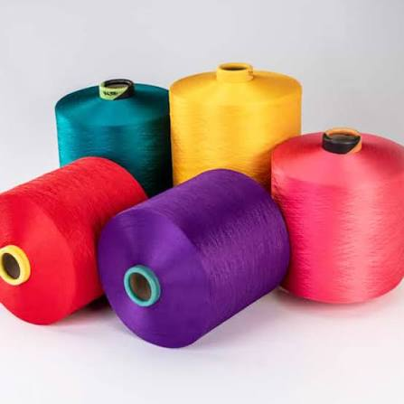
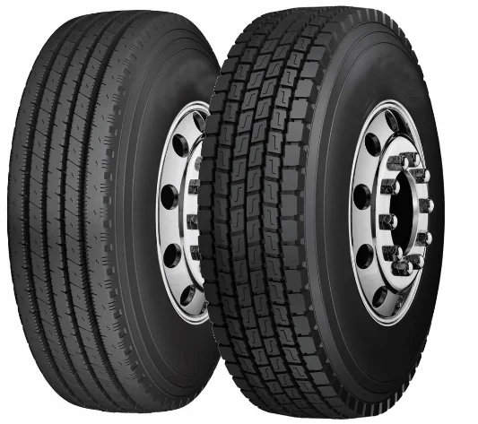
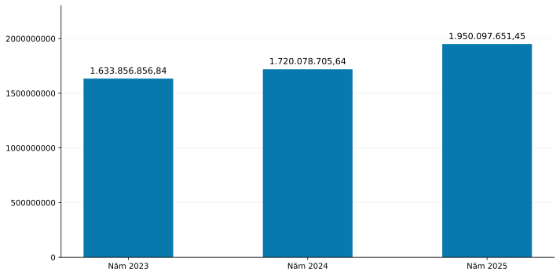
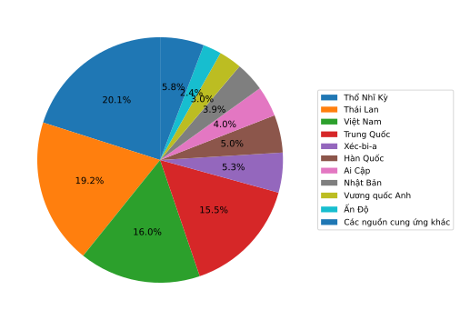
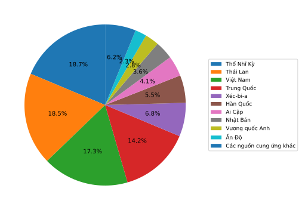
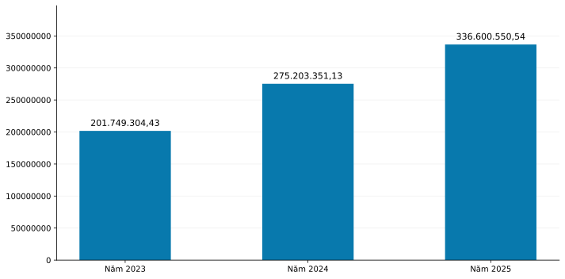
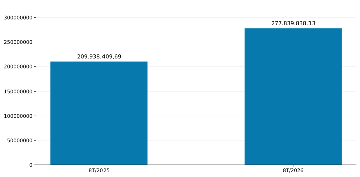

♦ Bộ Công Thương tiếp nhận hồ sơ đề nghị miễn trừ thuế chống bán phá giá đối với sản phẩm sợi dài làm từ polyester nhập khẩu từ Ấn Độ, In-đô-nê-xi-a, Ma-lai-xi-a và Trung Quốc


♦ Cảnh báo đối với mặt hàng lốp cao su dùng cho xe buýt hoặc xe tải xuất khẩu vào thị trường EU
Bộ Công Thương tiếp nhận hồ sơ đề nghị miễn trừ thuế chống bán phá giá đối với sản phẩm sợi dài làm từ polyester nhập khẩu từ Ấn Độ, In-đô-nê-xi-a, Ma-lai-xi-a và Trung Quốc
Sản phẩm sợi dài làm từ polyester
Ngày 13 tháng 10 năm 2026, Bộ Công Thương ban hành Quyết định số 2652/QĐ-BCT về kết quả rà soát cuối kỳ việc áp dụng biện pháp chống bán phá giá đối với một số sản phẩm sợi dài làm từ polyester có xuất xứ từ Ấn Độ, In-đô-nê-xi-a, Ma-lai-xi-a và Trung Quốc (mã vụ việc ER01.AD10). Sản phẩm thuộc phạm vi áp dụng biện pháp được phân loại theo các mã HS 5402.33.10, 5402.33.90, 5402.46.10, 5402.46.90, 5402.47.10 và 5402.47.90. Căn cứ Điều 12 và Điều 17 Thông tư số 26/2025/TT-BCT ngày 15 tháng 5 năm 2025 của Bộ Công Thương, các hàng hóa nhập khẩu thuộc diện áp dụng biện pháp phòng vệ thương mại có thể được xem xét miễn trừ trong một số trường hợp cụ thể, với điều kiện không làm giảm hiệu quả tổng thể của biện pháp. Các trường hợp được xem xét miễn trừ bao gồm hàng hóa thuộc danh sách được quy định tại quyết định áp dụng biện pháp hoặc quyết định rà soát; hàng hóa mà ngành sản xuất trong nước không sản xuất được; hàng hóa có đặc điểm khác biệt mà sản phẩm trong nước không thể thay thế; sản phẩm đặc biệt của hàng hóa tương tự hoặc cạnh tranh trực tiếp sản xuất trong nước; hàng hóa tương tự hoặc cạnh tranh trực tiếp không được bán tại thị trường trong nước trong điều kiện thông thường hoặc nguồn cung trong nước bị thiếu hụt do bất khả kháng; và hàng hóa nhập khẩu phục vụ nghiên cứu, phát triển hoặc các mục đích phi thương mại khác theo quy định. Trên cơ sở đó, Cục Phòng vệ thương mại thông báo để các doanh nghiệp đáp ứng điều kiện xem xét nộp hồ sơ đề nghị miễn trừ áp dụng thuế chống bán phá giá trong vụ việc ER01.AD10. Hồ sơ cần được chuẩn bị theo quy định tại Điều 16 và Phụ lục II Thông tư số 26/2025/TT-BCT. Theo khoản 3 Điều 17 và Điều 18 của Thông tư, doanh nghiệp gửi hồ sơ trực tiếp đến Cục Phòng vệ thương mại, qua đường bưu điện hoặc thông qua Cổng dịch vụ công trực tuyến của Bộ Công Thương tại địa chỉ https://dichvucong.moit.gov.vn. Doanh nghiệp cần rà soát kỹ điều kiện miễn trừ và chuẩn bị đầy đủ tài liệu theo quy định để hồ sơ được xem xét theo trình tự pháp luật hiện hành.
TIN NƯỚC NGOÀI
EU thông báo mức thuế chống bán phá giá tạm thời đề xuất đối với ống đồng nhập khẩu từ Việt Nam
Ngày 14 tháng 10 năm 2026, Ủy ban châu Âu (EC) thông báo mức thuế chống bán phá giá tạm thời đề xuất đối với sản phẩm ống và ống dẫn bằng đồng dạng cuộn nhập khẩu từ Trung Quốc, Mê-hi-cô, U-dơ-bê-ki-xtan và Việt Nam. Vụ việc được khởi xướng điều tra ngày 12 tháng 3 năm 2026. Theo thông tin Cục Phòng vệ thương mại, Bộ Công Thương tiếp nhận từ Thương vụ Việt Nam tại Bỉ và EU (kiêm nhiệm Lúc-xăm-bua và Ủy ban châu Âu), sản phẩm bị điều tra là ống và ống dẫn bằng đồng tinh luyện dạng cuộn, có thể có bề mặt nhẵn hoặc rãnh bên trong, chưa qua gia công thêm, hiện được phân loại theo mã CN ex 7411 10 90 (mã TARIC 7411 10 90 10). Theo tài liệu tóm tắt của EC, mức thuế chống bán phá giá tạm thời đề xuất áp dụng đối với các doanh nghiệp Việt Nam dao động từ 12,4% đến 14,4%, theo nguyên tắc áp dụng mức thuế thấp hơn giữa biên độ bán phá giá và biên độ thiệt hại. Đối với các doanh nghiệp được xác định biên độ riêng, EC sẽ cung cấp thông tin chi tiết về phương pháp tính mức thuế tương ứng. Doanh nghiệp cần kiểm tra kỹ tên tiếng Anh của mình trong tài liệu do EC công bố và thông báo kịp thời nếu phát hiện sai sót. Đây mới là các mức thuế tạm thời đề xuất, chưa phải mức thuế chính thức được áp dụng. Theo thông báo, các bên liên quan có 03 ngày làm việc kể từ ngày 14 tháng 10 năm 2026 để gửi ý kiến bình luận về mức thuế đề xuất. Do thời hạn ngắn, Cục Phòng vệ thương mại khuyến nghị các doanh nghiệp sản xuất, xuất khẩu sản phẩm bị điều tra khẩn trương nghiên cứu tài liệu của EC, rà soát mức thuế đề xuất áp dụng đối với doanh nghiệp mình và gửi ý kiến trong thời hạn quy định nếu có nội dung cần làm rõ hoặc đề nghị xem xét. Đồng thời, doanh nghiệp cần chủ động theo dõi diễn biến vụ việc, phối hợp với EC và thường xuyên trao đổi thông tin với Cục Phòng vệ thương mại để được hỗ trợ kịp thời trong quá trình xử lý vụ việc.
TIN NƯỚC NGOÀI
Hoa Kỳ ban hành kết luận sơ bộ rà soát thuế chống bán phá giá đối với túi giấy mua sắm từ Việt Nam
Ngày 14 tháng 10 năm 2026, Bộ Thương mại Hoa Kỳ (DOC) công bố kết luận sơ bộ rà soát hành chính thuế chống bán phá giá đối với túi giấy mua sắm nhập khẩu từ Việt Nam (mã vụ việc A-552-836), với giai đoạn rà soát từ ngày 03 tháng 01 năm 2024 đến ngày 30 tháng 6 năm 2025. Trong số 05 doanh nghiệp đề nghị rà soát, 04 doanh nghiệp đã rút yêu cầu, DOC chỉ tiến hành rà soát đối với doanh nghiệp còn lại. Do Việt Nam bị coi là nền kinh tế phi thị trường, DOC sử dụng giá trị thay thế của nước thứ ba để xác định giá thông thường. Kết luận sơ bộ xác định biên độ bán phá giá 28,52% đối với doanh nghiệp bị đơn duy nhất; các doanh nghiệp Việt Nam chưa có mức thuế riêng tiếp tục chịu mức 92,34%, trong khi các nhà xuất khẩu đã có mức thuế riêng từ các kỳ rà soát trước tiếp tục áp dụng mức 36,51%. DOC dự kiến nhận bản bình luận đến ngày 04 tháng 11, bản bình luận phản biện đến ngày 09 tháng 11 và yêu cầu tổ chức phiên điều trần đến ngày 13 tháng 11 năm 2026; kết luận cuối cùng dự kiến được ban hành vào khoảng ngày 11 tháng 02 năm 2027, có thể được gia hạn. Cục Phòng vệ thương mại khuyến nghị doanh nghiệp bị đơn khẩn trương rà soát số liệu tính toán, phản hồi sai sót nếu có và nộp ý kiến đúng hạn; các doanh nghiệp khác nên theo dõi vụ việc, cân nhắc đề nghị rà soát để được xem xét mức thuế riêng. Đồng thời, doanh nghiệp cần phối hợp với nhà nhập khẩu Hoa Kỳ thực hiện nghĩa vụ chứng nhận về hoàn trả thuế theo quy định, kiểm soát chặt chẽ xuất xứ hàng hóa và nguyên liệu, phòng tránh hành vi lẩn tránh biện pháp phòng vệ thương mại, đồng thời duy trì trao đổi với Cục Phòng vệ thương mại để được hỗ trợ kịp thời.
TIN NƯỚC NGOÀI
Vương quốc Anh tạm đình chỉ thu thuế chống trợ cấp đối với một số sản phẩm máy xúc có xuất xứ từ Trung Quốc
Ngày 15 tháng 10 năm 2026, Vương quốc Anh ban hành Thông báo phòng vệ thương mại số 2026/29 về việc tạm đình chỉ thu thuế chống trợ cấp (CTC) đối với một số sản phẩm máy xúc có xuất xứ từ Trung Quốc, căn cứ theo Điều 13 Luật Thuế (Thương mại xuyên biên giới) năm 2018 và quy định tại khoản 5(b) Điều 71 của Quy định về phòng vệ thương mại (Chống bán phá giá và trợ cấp) năm 2019.
Theo thông báo, việc thu thuế CTC đối với sản phẩm máy xúc do Công ty Liebherr Machinery (Dalian) Co., Ltd. sản xuất được tạm đình chỉ, với mã bổ sung của nhà xuất khẩu là 8A77. Biện pháp đình chỉ áp dụng đối với máy xúc bánh xích tự hành có phần thân trên quay 360 độ, trọng lượng vận hành từ 11 tấn đến dưới 80 tấn, thuộc mã HS 8429 5210 00, có xuất xứ từ Trung Quốc và xuất khẩu sang Vương quốc Anh.
Các sản phẩm máy đào bánh xích có phần thân trên quay 360 độ nhưng có trọng lượng vận hành dưới 11 tấn hoặc từ 80 tấn trở lên tiếp tục thuộc diện được miễn trừ khỏi biện pháp thuế CTC theo Thông báo phòng vệ thương mại số 2025/11.
Việc tạm đình chỉ có hiệu lực từ ngày 15 tháng 10 năm 2026 và kéo dài cho đến khi cuộc rà soát nhà xuất khẩu mới kết thúc hoặc bị chấm dứt.
Tổng hợp từ gov.uk
TIN NƯỚC NGOÀI
U-crai-na chấm dứt biện pháp chống bán phá giá đối với mặt hàng ốc vít thép nhập khẩu từ Trung Quốc
Ngày 12 tháng 10 năm 2026, Ủy ban Liên ngành về Thương mại quốc tế U-crai-na ban hành Quyết định số AD-609/2026/441-01 về việc chấm dứt áp dụng biện pháp chống bán phá giá (CBPG) chính thức đối với mặt hàng ốc vít thép có xuất xứ từ Trung Quốc. Biện pháp này trước đó được áp dụng theo các quyết định ngày 21 tháng 9 năm 2020 và ngày 26 tháng 1 năm 2026. Theo Cơ quan Hải quan Nhà nước U-crai-na, quyết định có hiệu lực sau khi thông báo liên quan được đăng trên báo Uriadovyi Kurier ngày 13 tháng 10 năm 2026.
Đối với mặt hàng xi măng nhập khẩu từ Thổ Nhĩ Kỳ, Ủy ban đã khởi xướng rà soát biện pháp CBPG do sắp hết thời hạn áp dụng, theo Quyết định số AD-610/2026/441-01. Biện pháp được áp dụng từ ngày 27 tháng 8 năm 2021 sẽ tiếp tục có hiệu lực cho đến khi có quyết định sau rà soát. Quyết định khởi xướng rà soát cũng có hiệu lực sau khi thông báo được đăng trên báo Uriadovyi Kurier ngày 13 tháng 10 năm 2026.
Biện pháp CBPG đối với ốc vít thép Trung Quốc được áp dụng năm 2020 sau cuộc điều tra khởi xướng theo đề nghị của Công ty cổ phần Nhà máy Sản phẩm kim loại Druzhkivka. Kết quả điều tra khi đó cho thấy lượng hàng nhập khẩu bán phá giá gia tăng, trong khi sản lượng sản phẩm tương tự của doanh nghiệp U-crai-na giảm 40,1%.
Đối với xi măng Thổ Nhĩ Kỳ, biện pháp CBPG được áp dụng năm 2021 theo đề nghị của các nhà sản xuất U-crai-na. Kết quả điều tra cho thấy, trong giai đoạn điều tra, lượng xi măng nhập khẩu bán phá giá từ Thổ Nhĩ Kỳ tăng 184,58%; giá nhập khẩu thấp hơn giá bán và chi phí sản xuất sản phẩm tương tự của ngành sản xuất trong nước.
Tổng hợp từ mezha.net
TIN NƯỚC NGOÀI
Nhật Bản dự kiến khởi xướng điều tra chống bán phá giá đối với titan đi-ô-xít dạng rutile và các chế phẩm từ sản phẩm này của Trung Quốc
Nhật Bản dự kiến khởi xướng điều tra chống bán phá giá (CBPG) đối với titan đi-ô-xít dạng rutile và các chế phẩm được sản xuất từ titan đi-ô-xít dạng rutile có xuất xứ từ Trung Quốc. Việc khởi xướng điều tra là bước đầu tiên trong quy trình xử lý vụ việc, chưa đồng nghĩa với kết luận có hành vi bán phá giá hoặc quyết định áp dụng thuế CBPG.
Trong quá trình điều tra, cơ quan chức năng có thể yêu cầu các bên liên quan cung cấp thông tin, gửi bảng câu hỏi điều tra và xem xét áp dụng biện pháp tạm thời trước khi đưa ra kết luận cuối cùng. Việc khởi xướng điều tra cũng có thể làm gia tăng rủi ro về thuế đối với các lô hàng xuất khẩu từ Trung Quốc sang Nhật Bản, tùy thuộc vào diễn biến và kết quả của vụ việc.
Titan đi-ô-xít dạng rutile là nguyên liệu được sử dụng trong sản xuất chất màu, sơn phủ và nhựa. Diễn biến điều tra tại Nhật Bản cần được theo dõi trong bối cảnh các biện pháp phòng vệ thương mại đối với cùng mặt hàng tại các thị trường khác có thể ảnh hưởng đến dòng chảy thương mại và mức độ cạnh tranh giữa nguồn cung từ Trung Quốc với các nguồn cung khác tại châu Á.
Hiện thông tin được công bố mới đề cập đến kế hoạch khởi xướng điều tra; chưa có thông tin về mức thuế đề xuất hoặc kết luận điều tra. Do đó, cần tiếp tục theo dõi thông báo chính thức của cơ quan chức năng Nhật Bản để cập nhật phạm vi sản phẩm, thời kỳ điều tra và các bước tiếp theo của vụ việc.
Tổng hợp từ newsquawk.com
TIN NƯỚC NGOÀI
EU khởi xướng rà soát cuối kỳ biện pháp thuế chống bán phá giá đối với thép dây từ Trung Quốc, các mức thuế hiện hành tiếp tục được duy trì
Ngày 12 tháng 10, Ủy ban Châu Âu đã khởi xướng cuộc rà soát cuối kỳ biện pháp thuế chống bán phá giá đối với sản phẩm thép dây có xuất xứ từ Trung Quốc theo đơn yêu cầu của Hiệp hội Thép Châu Âu (EUROFER) vào ngày 30 tháng 6 năm 2026.
Cuộc điều tra này áp dụng đối với các sản phẩm thép dây cán nóng cụ thể làm từ sắt, thép không hợp kim và thép hợp kim (không bao gồm thép không gỉ). Các mức thuế chống bán phá giá hiện tại nhìn chung ở mức 24%, trong đó mức thuế riêng rẽ áp dụng cho Tập đoàn Valin (Valin Group) là 7.9%.
Mặc dù các biện pháp này trước đó dự kiến sẽ hết hạn vào ngày 14 tháng 10 nhưng sẽ tiếp tục có hiệu lực trong thời gian rà soát. Ủy ban Châu Âu sẽ đánh giá xem việc dỡ bỏ thuế có thể dẫn đến hành vi bán phá giá tái diễn và gây thiệt hại cho các nhà sản xuất Châu Âu hay không. Quyết định này duy trì sự bảo hộ nhập khẩu hiện có cho các nhà sản xuất thép dây Châu Âu, ngăn chặn việc dỡ bỏ ngay lập tức các rào cản thuế quan đối với các sản phẩm Trung Quốc thuộc đối tượng điều chỉnh, nhưng không bổ sung thêm thuế mới hay làm thay đổi ngay lập tức chi phí nhập khẩu.
Tổng hợp từ news.metal.com
TIN NƯỚC NGOÀI
Úc khởi xướng rà soát thuế đối với thép mạ hợp kim nhôm kẽm từ Trung Quốc
Ủy ban Phòng vệ thương mại Úc đã thông báo khởi xướng rà soát các biện pháp thuế chống bán phá giá và chống trợ cấp hiện hành đối với hàng nhập khẩu thép mạ hợp kim nhôm kẽm từ Trung Quốc, cụ thể liên quan đến nhà sản xuất Trung Quốc là Công ty TNHH Công nghệ Vật liệu Shandong Shinmade (Shandong Shinmade Material Tech Co., Ltd.). Các biện pháp này dự kiến sẽ hết hạn vào ngày 5 tháng 8 năm 2028.
Cuộc rà soát này được khởi xướng sau đơn đề nghị do công ty Shandong Shinmade nộp vào ngày 18 tháng 9 năm 2026, bao gồm giai đoạn từ ngày 1 tháng 7 năm 2025 đến ngày 30 tháng 6 năm 2026.
Cuộc rà soát nhanh sẽ xác định xem các thông báo thuế chống bán phá giá và chống trợ cấp hiện hành nên được giữ nguyên hay được sửa đổi để phản ánh các yếu tố đặc thù của Shandong Shinmade. Shandong Shinmade lập luận rằng các mức thuế hiện tại không phản ánh đúng chi phí sản xuất và doanh số bán hàng trong nước của chính họ vì công ty này đã không tham gia vào cuộc điều tra ban đầu. Công ty cũng cho biết họ chưa từng xuất khẩu các sản phẩm liên quan sang Úc và do đó thiếu thông tin để ước tính giá xuất khẩu hiện tại.
Úc hiện đang áp dụng các biện pháp chống bán phá giá và chống trợ cấp đối với thép mạ hợp kim nhôm-kẽm của Trung Quốc, với các mức thuế hiệu lực đã công bố dao động từ 21,6% đến 33% đối với một số nhà xuất khẩu nhất định, trong khi các nhà cung cấp khác phải chịu các biện pháp chống bán phá giá dựa trên giá sàn và thuế chống trợ cấp từ 0,4% đến 1,2%.
Các sản phẩm thuộc diện rà soát là sản phẩm cán phẳng bằng sắt hoặc thép không hợp kim, có chiều rộng từ 600 mm trở lên, được mạ hoặc phủ hợp kim nhôm-kẽm (có phủ nhựa hoặc không). Phạm vi sản phẩm bao gồm thép mạ hợp kim nhôm-kẽm với các bề mặt xử lý khác nhau, bao gồm sản phẩm được thụ động hóa, phủ nhựa, tra dầu và cán luyện tinh (skin-passed).
Tổng hợp từ steelorbis.com
TIN NƯỚC NGOÀI
Thuế thép thanh Trung Quốc sắp được áp dụng, gây sức ép cho các doanh nghiệp rèn quy mô nhỏ
Thuế chống bán phá giá đối với các sản phẩm thép thanh từ Trung Quốc sắp được áp dụng, làm dấy lên những lo ngại về chi phí đầu vào tăng cao tại các công ty rèn quy mô vừa và nhỏ sử dụng vật liệu này làm nguyên liệu thô. Các biện pháp hạn chế nhập khẩu vốn được đưa ra để bảo vệ các nhà sản xuất thép nội địa nay lại đang trở thành gánh nặng cho các nhà sản xuất hạ nguồn – những đối tượng mua sản phẩm từ họ.
Hiệp hội ngành rèn cho biết rằng Ủy ban Thương mại thuộc Bộ Thương mại, Công nghiệp và Năng lượng đã đưa ra kết luận sơ bộ xác định ngành công nghiệp trong nước đã bị thiệt hại liên quan đến các sản phẩm thép thanh của Trung Quốc. Ủy ban này sau đó đã kiến nghị Bộ Tài chính và Kinh tế áp dụng mức thuế chống bán phá giá tạm thời lên tới 27,96%. Kết luận cuối cùng dự kiến sẽ được đưa ra vào khoảng cuối tháng 11. Thép thanh là thép được gia công thành dạng thanh và được sử dụng trong các hoạt động rèn để sản xuất các bộ phận cho ô tô, máy móc nông nghiệp và thiết bị xây dựng.
Vụ việc bắt nguồn từ đơn kiện chống bán phá giá do các công ty SeAH Besteel và SeAH Changwon Integrated Special Steel đệ trình vào tháng 2 bởi thiệt hại do thép thanh giá rẻ từ Trung Quốc ồ ạt tràn vào. Theo ngành công nghiệp này, phần lớn thép thanh nhập khẩu vào Hàn Quốc có xuất xứ từ Trung Quốc. Một quan chức ngành thép cho biết: "Việc nhập khẩu thép thanh giá rẻ của Trung Quốc đã tăng lên trong vài năm qua, điều này khiến các doanh nghiệp trong nước gặp nhiều khó khăn hơn. Trong một số trường hợp, khoảng cách giá giữa sản phẩm Trung Quốc và Hàn Quốc nới rộng lên tới hơn 30%, do đó cần có các biện pháp để bảo vệ ngành công nghiệp trong nước."
Các nhà sản xuất thép đang đẩy mạnh nỗ lực áp dụng các biện pháp hạn chế nhập khẩu đối với các sản phẩm khác. Công ty Iljin Steel đã nộp đơn yêu cầu điều tra chống bán phá giá đối với ống thép không hàn của Trung Quốc vào tháng 8 và cuộc điều tra đã chính thức khởi động vào ngày 8 tháng này.
Trong khi đó, các công ty rèn phản đối các biện pháp này. Họ cho rằng thép thanh của Hàn Quốc và Trung Quốc khác nhau về mác thép và chất lượng nên không thể dễ dàng thay thế cho nhau. Khách hàng của họ cũng có sự phân hóa nhất định, bởi vì các hãng ô tô bao gồm cả Hyundai Motor (005380.KS) hạn chế sử dụng nguyên liệu Trung Quốc. Ngành rèn kỳ vọng rằng thuế quan sẽ chỉ làm tăng chi phí đối với các công ty rèn nội địa. Đối thủ cạnh tranh thực sự của họ là các công ty rèn Trung Quốc – những đơn vị sử dụng thép thanh sản xuất trong nước mà không phải chịu thuế. Các công ty rèn Hàn Quốc cho biết nếu thuế được áp dụng, họ sẽ không thể tránh khỏi việc thất thế về giá cả.
Hiệp hội Công nghiệp Rèn Hàn Quốc đã yêu cầu Bộ Thương mại, Bộ Doanh nghiệp Vừa và Nhỏ và Khởi nghiệp cùng các cơ quan khác ban hành các biện pháp cứu trợ vào ngày 29 tháng 9, tiếp nối các yêu cầu trước đó vào tháng 6 và tháng 7. Yêu cầu trọng tâm của hiệp hội này là thép thanh không được sản xuất tại Hàn Quốc hoặc không thể dễ dàng thay thế do khác biệt về mác thép và chất lượng phải được loại khỏi phạm vi áp thuế.
Tổng hợp từ en.sedaily.com
TIN NƯỚC NGOÀI
Úc áp thuế chống bán phá giá và chống trợ cấp tạm thời đối với cửa và cửa sổ bằng nhôm của Trung Quốc
Ủy ban Phòng vệ Thương mại Úc đã ban hành Thông báo số 2026/147 vào ngày 14 tháng 10 năm 2026, đưa ra kết luận sơ bộ trong các cuộc điều tra chống bán phá giá (CBPG) và chống trợ cấp (CTC) đối với các sản phẩm cửa và cửa sổ bằng nhôm nhập khẩu từ Trung Quốc. Các mức thuế tạm thời chính thức có hiệu lực từ ngày 15 tháng 10 năm 2026 và được thu dưới hình thức ký quỹ.
Các biên độ bán phá giá và trợ cấp tạm thời tính theo từng doanh nghiệp bao gồm:
Altop Facade: 0% chống bán phá giá và 0% trợ cấp.
Broad Windows and Doors and Curtain Wall System: 24,4% chống bán phá giá và 0% trợ cấp.
Guangdong Kete Facadetech: 12,1% chống bán phá giá và 0% trợ cấp.
Các nhà xuất khẩu hợp tác khác: 24,4% chống bán phá giá và 0% trợ cấp.
Các nhà xuất khẩu không hợp tác: Phải chịu biên độ bán phá giá 70,4% và biên độ trợ cấp 2,9%.
Các sản phẩm liên quan thuộc mã HS 7610.10.00.12.
Tổng hợp từ yieh.com
THÔNG TIN XUẤT NHẬP KHẨU
Cảnh báo đối với mặt hàng lốp cao su dùng cho xe buýt hoặc xe tải xuất khẩu vào thị trường EU
Lốp cao su dùng cho xe buýt hoặc xe tải
1. Mô tả mặt hàng lốp cao su dùng cho xe buýt hoặc xe tải
Lốp cao su dùng cho xe buýt hoặc xe tải (Tyres for buses or lorries (new and retreaded)) là sản phẩm công nghiệp được thiết kế chuyên dụng để lắp đặt cho các phương tiện vận tải hành khách và vận tải hàng hóa có tải trọng lớn. Sản phẩm có chức năng nâng đỡ trọng lượng phương tiện và hàng hóa, truyền lực kéo, lực phanh, hỗ trợ điều hướng, đồng thời bảo đảm độ bám đường và khả năng vận hành an toàn trong các điều kiện giao thông khác nhau. So với lốp xe du lịch thông thường, lốp xe buýt và xe tải thường có kết cấu chắc chắn, khả năng chịu tải cao, độ bền lớn và khả năng chống mài mòn tốt nhằm đáp ứng yêu cầu vận hành liên tục trên quãng đường dài, chịu áp lực lớn và thích ứng với nhiều điều kiện mặt đường.
Về cấu tạo, lốp cao su dùng cho xe buýt hoặc xe tải thường bao gồm mặt lốp, lớp cao su hông lốp, các lớp bố gia cường, đai thép và tanh lốp. Mặt lốp được thiết kế với hệ thống rãnh và hoa lốp phù hợp nhằm tăng độ bám đường, hỗ trợ thoát nước, hạn chế trượt và nâng cao hiệu quả phanh. Phần hông lốp có nhiệm vụ bảo vệ kết cấu bên trong, chịu biến dạng khi phương tiện di chuyển và góp phần nâng cao độ bền. Các lớp bố và đai gia cường, thường được làm từ sợi dệt kỹ thuật hoặc thép, giúp tăng cường độ cứng vững, khả năng chịu tải và độ ổn định của lốp. Tanh lốp có tác dụng giữ lốp cố định chắc chắn trên vành bánh xe. Tùy theo thiết kế và mục đích sử dụng, sản phẩm có thể được phân thành lốp có săm và lốp không săm, lốp bố chéo và lốp bố tỏa tròn (radial), cũng như lốp dành cho trục lái, trục chủ động hoặc trục kéo moóc.
Về nguyên liệu, sản phẩm chủ yếu sử dụng cao su thiên nhiên, cao su tổng hợp, muội than, silica, thép cường lực, sợi gia cường và các loại hóa chất phụ gia phục vụ quá trình lưu hóa, tăng độ bền và cải thiện tính năng vận hành. Quy trình sản xuất cơ bản bao gồm phối trộn nguyên liệu cao su, cán luyện, tạo hình các bộ phận, lắp ráp thành lốp mộc, lưu hóa trong khuôn để hình thành hình dạng và hoa lốp, sau đó kiểm tra chất lượng và hoàn thiện sản phẩm. Các chỉ tiêu kỹ thuật quan trọng thường bao gồm kích thước lốp, chỉ số tải trọng, cấp tốc độ, khả năng chịu nhiệt, độ bền kết cấu, khả năng chống mài mòn và mức độ phù hợp với các tiêu chuẩn an toàn liên quan.
Lốp cao su dùng cho xe buýt hoặc xe tải được sử dụng rộng rãi trong hoạt động vận tải hành khách công cộng, vận tải đường bộ, logistics, vận chuyển hàng hóa, xây dựng và các lĩnh vực công nghiệp khác. Nhu cầu đối với mặt hàng này gắn liền với quy mô đội xe thương mại, sự phát triển của hoạt động vận tải và logistics, đầu tư hạ tầng giao thông, cũng như nhu cầu thay thế lốp trong quá trình khai thác phương tiện. Trên thị trường, sản phẩm được tiêu thụ thông qua các nhà sản xuất và lắp ráp phương tiện, doanh nghiệp vận tải, nhà phân phối phụ tùng, đại lý lốp và các cơ sở sửa chữa, bảo dưỡng. Ngoài thị trường lắp ráp ban đầu, phân khúc lốp thay thế cũng giữ vai trò quan trọng do lốp xe tải và xe buýt thường xuyên chịu tải trọng lớn, cường độ sử dụng cao và yêu cầu bảo dưỡng định kỳ.
Trong thương mại quốc tế, lốp cao su dùng cho xe buýt hoặc xe tải là mặt hàng có hoạt động sản xuất, xuất khẩu và nhập khẩu đáng kể giữa các quốc gia có ngành công nghiệp cao su và sản xuất lốp phát triển. Hoạt động cạnh tranh trên thị trường chủ yếu liên quan đến giá thành, chất lượng, độ bền, hiệu suất nhiên liệu, khả năng tái sử dụng hoặc đắp lại lốp, hệ thống phân phối và uy tín thương hiệu. Do đây là mặt hàng có thể chịu sự điều chỉnh của các quy định về chất lượng, an toàn sản phẩm, ghi nhãn và tiêu chuẩn kỹ thuật tại thị trường nhập khẩu, doanh nghiệp xuất khẩu cần bảo đảm hồ sơ kỹ thuật, chứng từ xuất xứ, thông tin nhà sản xuất và dữ liệu giao dịch đầy đủ, nhất quán. Đồng thời, việc theo dõi biến động nhập khẩu, giá bán, năng lực sản xuất trong nước tại thị trường nhập khẩu và các động thái điều tra phòng vệ thương mại có ý nghĩa quan trọng đối với doanh nghiệp sản xuất, xuất khẩu mặt hàng này.
Quy trình sản xuất lốp cao su dùng cho xe buýt hoặc xe tải
Quy trình sản xuất lốp cao su dùng cho xe buýt hoặc xe tải là một quy trình công nghiệp gồm nhiều công đoạn liên tiếp, đòi hỏi sự kết hợp giữa nguyên liệu cao su, vật liệu gia cường, công nghệ chế biến và hệ thống kiểm soát chất lượng nhằm tạo ra sản phẩm có khả năng chịu tải trọng lớn, chống mài mòn và bảo đảm an toàn trong quá trình vận hành. Trước tiên, các doanh nghiệp tiến hành chuẩn bị và xử lý nguyên liệu đầu vào, bao gồm cao su thiên nhiên, cao su tổng hợp, muội than, silica, dầu công nghệ, chất lưu hóa, chất chống lão hóa, dây thép và các loại sợi dệt kỹ thuật. Các nguyên liệu này được lựa chọn, kiểm tra chất lượng và phối trộn theo công thức phù hợp với yêu cầu kỹ thuật của từng loại lốp. Tiếp theo, hỗn hợp cao su được đưa vào công đoạn cán luyện để phân tán đồng đều các thành phần, cải thiện tính chất cơ học và tạo độ dẻo cần thiết cho quá trình gia công. Sau đó, cao su được cán thành các tấm hoặc ép đùn thành những bộ phận khác nhau của lốp, bao gồm mặt lốp, hông lốp và các lớp cao su bên trong. Đồng thời, các vật liệu gia cường như dây thép và sợi dệt được xử lý, tráng phủ cao su và gia công thành lớp bố, đai thép hoặc các bộ phận chịu lực nhằm tăng cường độ bền kết cấu và khả năng chịu tải của sản phẩm.
Sau khi hoàn thành các bộ phận riêng lẻ, doanh nghiệp tiến hành lắp ráp lốp mộc trên máy chuyên dụng. Trong công đoạn này, các lớp cao su, lớp bố, đai thép, tanh lốp và mặt lốp được ghép nối theo trình tự kỹ thuật xác định để hình thành kết cấu hoàn chỉnh của lốp trước khi lưu hóa. Đối với lốp xe buýt và xe tải, việc kiểm soát độ đồng đều của các lớp vật liệu, độ bám dính giữa các thành phần và độ chính xác trong quá trình lắp ráp đặc biệt quan trọng do sản phẩm phải chịu tải trọng lớn và hoạt động trong thời gian dài. Tiếp theo, lốp mộc được đưa vào khuôn lưu hóa, tại đây nhiệt độ, áp suất và thời gian được kiểm soát phù hợp để cao su xảy ra phản ứng lưu hóa, hình thành mạng liên kết giữa các phân tử cao su, đồng thời tạo hình mặt lốp, hoa lốp và các thông số kích thước theo thiết kế. Đây là công đoạn có ảnh hưởng trực tiếp đến độ bền, độ đàn hồi, khả năng chịu nhiệt, chống mài mòn và tuổi thọ của lốp thành phẩm.
Sau công đoạn lưu hóa, lốp được làm nguội, làm sạch và kiểm tra chất lượng nhằm phát hiện các khuyết tật có thể ảnh hưởng đến hiệu suất sử dụng. Hoạt động kiểm tra thường bao gồm kiểm tra ngoại quan, kích thước, độ đồng đều, độ cân bằng, độ bền kết cấu và các chỉ tiêu kỹ thuật liên quan; một số sản phẩm còn được kiểm tra bằng thiết bị chụp X-quang hoặc các phương pháp thử nghiệm chuyên dụng để phát hiện lỗi bên trong. Ngoài ra, doanh nghiệp có thể thực hiện các thử nghiệm về khả năng chịu tải, độ bền khi vận hành, khả năng chịu áp suất và độ bám đường theo yêu cầu kỹ thuật, tiêu chuẩn áp dụng hoặc quy định của thị trường tiêu thụ. Những sản phẩm không đáp ứng yêu cầu chất lượng sẽ được phân loại để xử lý theo quy trình kiểm soát nội bộ, trong khi các sản phẩm đạt tiêu chuẩn được đánh dấu thông số kỹ thuật, đóng gói và đưa vào kho thành phẩm để phân phối trong nước hoặc xuất khẩu.
Nhìn chung, quy trình sản xuất lốp cao su dùng cho xe buýt hoặc xe tải đòi hỏi mức độ cơ giới hóa cao, công nghệ chế biến chính xác và hệ thống quản lý chất lượng chặt chẽ. Chi phí sản xuất phụ thuộc đáng kể vào giá nguyên liệu cao su, thép, sợi gia cường, năng lượng, nhân công, khấu hao máy móc và chi phí nghiên cứu, phát triển công nghệ. Bên cạnh đó, việc lựa chọn công thức phối trộn, thiết kế kết cấu lốp và kiểm soát các thông số trong từng công đoạn có ảnh hưởng lớn đến chất lượng và khả năng cạnh tranh của sản phẩm. Đối với hoạt động thương mại quốc tế và nghiên cứu phòng vệ thương mại, việc nắm rõ quy trình sản xuất còn giúp xác định cơ cấu chi phí, nguồn gốc nguyên liệu, mức độ gia công tại nước xuất khẩu, giá trị gia tăng và khả năng phân biệt giữa các dòng sản phẩm, qua đó hỗ trợ doanh nghiệp xây dựng hồ sơ xuất xứ, chứng minh tính chất sản phẩm và cung cấp thông tin khi cơ quan điều tra yêu cầu.
Thị trường lốp cao su dùng cho xe buýt hoặc xe tải của EU và xu hướng
Thị trường lốp cao su dùng cho xe buýt hoặc xe tải tại EU có vai trò quan trọng trong ngành công nghiệp lốp xe, gắn liền với hoạt động vận tải hàng hóa, logistics, vận tải hành khách và nhu cầu thay thế lốp của các đội xe thương mại. Nhu cầu tiêu thụ mặt hàng này chịu ảnh hưởng từ tình hình kinh tế, sản xuất công nghiệp, lưu lượng vận tải đường bộ và hoạt động đầu tư phương tiện mới. Trong giai đoạn 2023 - 2025, thị trường có sự biến động do nhu cầu vận tải tại một số quốc gia châu Âu suy yếu, khiến doanh nghiệp vận tải thận trọng hơn trong việc mở rộng đội xe và chi tiêu cho phương tiện. Tuy nhiên, phân khúc lốp thay thế vẫn giữ vai trò quan trọng do lốp xe tải và xe buýt thường phải hoạt động với cường độ cao, chịu tải trọng lớn và cần được bảo dưỡng định kỳ.
Về cơ cấu cạnh tranh, thị trường EU có sự tham gia của các nhà sản xuất nội khối và nhiều nhà cung cấp quốc tế, trong đó các doanh nghiệp châu Á ngày càng gia tăng sự hiện diện nhờ lợi thế về chi phí và năng lực cung ứng. Các yếu tố cạnh tranh chủ yếu bao gồm giá bán, độ bền, khả năng chịu tải, độ bám đường, hiệu suất nhiên liệu và tuổi thọ sản phẩm. Trong thời gian tới, thị trường được dự báo tiếp tục chuyển dịch theo hướng phát triển lốp có lực cản lăn thấp, tiết kiệm nhiên liệu, sử dụng vật liệu thân thiện với môi trường và có khả năng tái chế hoặc đắp lại nhằm kéo dài vòng đời sản phẩm. Đồng thời, các yêu cầu về chất lượng, an toàn, ghi nhãn hiệu suất và truy xuất nguồn gốc ngày càng có ý nghĩa đối với hoạt động xuất khẩu vào EU.
Đối với Việt Nam, EU là thị trường tiềm năng để mở rộng xuất khẩu lốp cao su dùng cho xe buýt hoặc xe tải, đặc biệt khi doanh nghiệp có khả năng cạnh tranh về giá, chất lượng và đáp ứng quy tắc xuất xứ theo Hiệp định EVFTA. Tuy nhiên, doanh nghiệp cần lưu ý nguy cơ phòng vệ thương mại do EU đã áp dụng các biện pháp chống bán phá giá và chống trợ cấp đối với một số loại lốp xe tải, xe buýt có xuất xứ Trung Quốc. Vì vậy, doanh nghiệp Việt Nam cần chủ động theo dõi diễn biến nhập khẩu, biến động giá, chính sách thương mại của EU và các dấu hiệu gia tăng điều tra; đồng thời bảo đảm minh bạch về xuất xứ, chi phí sản xuất và hồ sơ giao dịch để hạn chế rủi ro, duy trì khả năng tiếp cận thị trường và phát triển xuất khẩu bền vững.
2. Tình hình xuất khẩu lốp cao su dùng cho xe buýt hoặc xe tải từ các nguồn trên thế giới sang thị trường EU
Năm 2023, tổng kim ngạch xuất khẩu lốp cao su dùng cho xe buýt hoặc xe tải từ tất cả các nguồn trên thế giới sang EU đạt 1,6 tỷ USD, trong đó Thổ Nhĩ Kỳ là nhà cung cấp lớn nhất, tiếp theo là các thị trường như Thái Lan, Trung Quốc, Việt Nam và Hàn Quốc. Trong năm 2024, kim ngạch xuất khẩu mặt hàng này sang EU tăng 5,3% so với năm 2023 đạt 1,7 tỷ USD. Năm 2025, kim ngạch xuất khẩu sang EU tiếp tục tăng 13,4%, đạt gần 2 tỷ USD.
Nhìn chung, giai đoạn 2023-2025 cho thấy thị trường EU tiếp tục là điểm đến quan trọng đối với lốp cao su dùng cho xe buýt hoặc xe tải, với xu hướng gia tăng nhập khẩu và đa dạng hóa nguồn cung. Cạnh tranh trên thị trường ngày càng rõ nét giữa các nhà sản xuất tại Thổ Nhĩ Kỳ, Trung Quốc, Thái Lan, Việt Nam và một số quốc gia khác. Trong đó, Thổ Nhĩ Kỳ có lợi thế về vị trí địa lý và khả năng cung ứng cho thị trường châu Âu, Trung Quốc duy trì quy mô sản xuất lớn, còn Thái Lan và Việt Nam đang tăng cường vai trò trong chuỗi cung ứng quốc tế. Đối với doanh nghiệp Việt Nam, xu hướng tăng nhập khẩu từ Việt Nam là tín hiệu tích cực, tạo điều kiện mở rộng xuất khẩu và nâng cao vị thế trên thị trường EU. Tuy nhiên, doanh nghiệp cũng cần lưu ý rằng cạnh tranh về giá, chất lượng, độ bền, hiệu quả sử dụng nhiên liệu và tiêu chuẩn môi trường ngày càng gay gắt. Đồng thời, cần theo dõi sát các biện pháp phòng vệ thương mại, quy định kỹ thuật và yêu cầu truy xuất nguồn gốc của EU để chủ động quản trị rủi ro, bảo đảm tính minh bạch về xuất xứ và duy trì khả năng tiếp cận thị trường.
Tổng giá trị xuất khẩu lốp cao su dùng cho xe buýt hoặc xe tải từ các nguồn trên thế giới sang thị trường EU từ 2023 đến 2025
Đơn vị: USD

Nguồn: S&P Global
Năm 2024, Thổ Nhĩ Kỳ là nguồn cung cấp có trị giá xuất khẩu lốp cao su dùng cho xe buýt hoặc xe tải lớn nhất sang thị trường EU, đạt 345,1 triệu USD, chiếm 20,1% tổng kim ngạch nhập khẩu sản phẩm cùng loại của EU. Thái Lan xếp thứ hai với trị giá xuất khẩu đạt 329,6 triệu USD, chiếm 19,2% tổng kim ngạch nhập khẩu sản phẩm cùng loại của EU. Việt Nam xếp thứ ba với trị giá xuất khẩu đạt 275,2 triệu USD, chiếm 16% tổng kim ngạch nhập khẩu sản phẩm cùng loại của EU. Trung Quốc xếp thứ tư với trị giá xuất khẩu đạt 266,3 triệu USD, chiếm 15,5% tổng kim ngạch nhập khẩu sản phẩm cùng loại của EU. Xéc-bi-a xếp thứ năm với trị giá xuất khẩu đạt 90,4 triệu USD, chiếm 5,3% tổng kim ngạch nhập khẩu sản phẩm cùng loại của EU. Hàn Quốc, Ai Cập và Nhật Bản lần lượt xếp thứ sáu, thứ bảy và thứ tám với trị giá xuất khẩu đạt 85,4 triệu USD, 68,7 triệu USD và 66,8 triệu USD. Tổng trị giá xuất khẩu lốp cao su dùng cho xe buýt hoặc xe tải của mười nguồn cung ứng chính sang thị trường EU đạt 1,6 tỷ USD, chiếm 94,2% tổng kim ngạch nhập khẩu sản phẩm cùng loại của EU. Tổng trị giá xuất khẩu lốp cao su dùng cho xe buýt hoặc xe tải của các nguồn cung ứng khác đạt 99,3 triệu USD, chiếm 5,8% tổng kim ngạch nhập khẩu sản phẩm cùng loại của EU.
Năm 2025, Thổ Nhĩ Kỳ tiếp tục là nguồn cung cấp có trị giá xuất khẩu lốp cao su dùng cho xe buýt hoặc xe tải lớn nhất sang thị trường EU, đạt 364,1 triệu USD, chiếm 18,7% tổng kim ngạch nhập khẩu sản phẩm cùng loại của EU. Thái Lan xếp thứ hai với trị giá xuất khẩu đạt 361,7 triệu USD, chiếm 18,5% tổng kim ngạch nhập khẩu sản phẩm cùng loại của EU. Việt Nam xếp thứ ba với trị giá xuất khẩu đạt gần 336,6 triệu USD, chiếm 17,3% tổng kim ngạch nhập khẩu sản phẩm cùng loại của EU. Trung Quốc xếp thứ tư với trị giá xuất khẩu đạt 276,9 triệu USD, chiếm 14,2% tổng kim ngạch nhập khẩu sản phẩm cùng loại của EU. Xéc-bi-a xếp thứ năm với trị giá xuất khẩu đạt 131,7 triệu USD, chiếm 6,8% tổng kim ngạch nhập khẩu sản phẩm cùng loại của EU. Hàn Quốc, Ai Cập và Nhật Bản lần lượt xếp thứ sáu, thứ bảy và thứ tám với trị giá xuất khẩu đạt 108,1 triệu USD, 80,3 triệu USD và 71,1 triệu USD. Tổng trị giá xuất khẩu lốp cao su dùng cho xe buýt hoặc xe tải của mười nguồn cung ứng sang thị trường EU đạt 1,8 tỷ USD, chiếm 93,8% tổng kim ngạch nhập khẩu sản phầm cùng loại của EU. Tổng trị giá xuất khẩu lốp cao su dùng cho xe buýt hoặc xe tải của các nguồn cung ứng khác đạt 120,3 triệu USD, chiếm 6,2% tổng kim ngạch nhập khẩu sản phẩm cùng loại của EU.
Các nguồn cung ứng chính sang thị trường EU năm 2024 và 2025
Đơn vị: USD
Nguồn cung ứng vào EU
Trị giá NK năm 2024
Trị giá NK năm 2025
2025 so với 2024
Tỷ trọng năm 2024
Tỷ trọng năm 2025
Thổ Nhĩ Kỳ
345.147.530
364.075.015
5,5%
20,1%
18,7%
Thái Lan
329.641.475
361.714.560
9,7%
19,2%
18,5%
Việt Nam
275.203.351
336.600.551
22,3%
16,0%
17,3%
Trung Quốc
266.344.154
276.948.446
4,0%
15,5%
14,2%
Xéc-bi-a
90.433.714
131.727.863
45,7%
5,3%
6,8%
Hàn Quốc
85.354.713
108.060.239
26,6%
5,0%
5,5%
Ai Cập
68.707.646
80.251.033
16,8%
4,0%
4,1%
Nhật Bản
66.802.160
71.085.606
6,4%
3,9%
3,6%
Vương quốc Anh
51.818.490
54.393.426
5,0%
3,0%
2,8%
Ấn Độ
41.325.465
44.918.923
8,7%
2,4%
2,3%
Nguồn: S&P Global
Trong 8 tháng đầu năm 2026, tổng kim ngạch nhập khẩu lốp cao su dùng cho xe buýt hoặc xe tải của EU tăng 15% so với cùng kỳ năm trước đó, đạt 1,4 tỷ USD. Thái Lan là nguồn cung cấp lốp cao su dùng cho xe buýt hoặc xe tải lớn nhất sang thị trường EU, đạt 298,6 triệu USD, chiếm 20,8% tổng kim ngạch nhập khẩu sản phẩm cùng loại của EU. Việt Nam xếp thứ hai trong số các nguồn cung ứng lớn lốp cao su dùng cho xe buýt hoặc xe tải sang thị trường EU với kim ngạch xuất khẩu đạt 277,8 triệu USD, chiếm 19,3% tổng kim ngạch nhập khẩu sản phẩm cùng loại của EU. Thổ Nhĩ Kỳ xếp thứ ba trong số các nguồn cung ứng lớn lốp cao su dùng cho xe buýt hoặc xe tải sang thị trường EU với kim ngạch xuất khẩu đạt 232,2 triệu USD, chiếm 16,2% tổng kim ngạch nhập khẩu sản phẩm cùng loại của EU. Trung Quốc xếp thứ tư trong số các nguồn cung ứng lớn lốp cao su dùng cho xe buýt hoặc xe tải sang thị trường EU với kim ngạch xuất khẩu đạt 202,9 triệu USD, chiếm 14,1% tổng kim ngạch nhập khẩu sản phẩm cùng loại của EU. Xéc-bi-a xếp thứ năm trong số các nguồn cung ứng lớn lốp cao su dùng cho xe buýt hoặc xe tải sang thị trường EU với kim ngạch xuất khẩu đạt 91,5 triệu USD, chiếm 6,4% tổng kim ngạch nhập khẩu sản phẩm cùng loại của EU. Hàn Quốc, Ấn Độ và Nhật Bản lần lượt xếp thứ sáu, thứ bảy và thứ tám với trị giá xuất khẩu đạt 72,1 triệu USD, 59,8 triệu USD và 48,5 triệu USD.
Các nguồn cung ứng chính sang thị trường EU trong 8 tháng đầu năm 2025 và 2026
Đơn vị: USD
Nguồn cung ứng vào EU
Trị giá NK 8 tháng/2025
Trị giá NK 8 tháng/2026
8T/2026 so với 8T/2025
Tỷ trọng 2026
Thái Lan
223.654.514
298.587.535
33,5%
20,8%
Việt Nam
209.938.410
277.839.838
32,3%
19,3%
Thổ Nhĩ Kỳ
243.120.074
232.243.968
-4,5%
16,2%
Trung Quốc
187.781.969
202.901.174
8,1%
14,1%
Xéc-bi-a
78.953.462
91.530.805
15,9%
6,4%
Hàn Quốc
77.194.319
72.059.554
-6,7%
5,0%
Ấn Độ
21.133.396
59.779.575
182,9%
4,2%
Nhật Bản
48.724.870
48.457.029
-0,5%
3,4%
Ai Cập
50.510.836
48.401.191
-4,2%
3,4%
Vương quốc Anh
34.697.591
38.066.229
9,7%
2,7%
Nguồn: S&P Global
Tỷ trọng các nguồn cung ứng chính xuất khẩu sang EU năm 2024

Nguồn: S&P Global
Tỷ trọng các nguồn cung ứng chính xuất khẩu sang EU năm 2025

Nguồn: S&P Global
3. Tình hình xuất khẩu lốp cao su dùng cho xe buýt hoặc xe tải của Việt Nam sang thị trường EU
Năm 2023, trị giá xuất khẩu mặt hàng lốp cao su dùng cho xe buýt hoặc xe tải của Việt Nam sang thị trường EU đạt 201,7 triệu USD, chiếm 12,3% tổng kim ngạch nhập khẩu mặt hàng lốp cao su dùng cho xe buýt hoặc xe tải của EU, Việt Nam xếp thứ tư trong số các nguồn cung cấp lốp cao su dùng cho xe buýt hoặc xe tải sang thị trường EU. Năm 2024, trị giá xuất khẩu mặt hàng này của Việt Nam tăng 36,4%, đạt 275,2 triệu USD, chiếm 16% tổng kim ngạch nhập khẩu mặt hàng cùng loại của EU, Việt Nam xếp thứ ba trong số các nguồn cung cấp lốp cao su dùng cho xe buýt hoặc xe tải sang thị trường EU. Năm 2025, tổng kim ngạch xuất khẩu mặt hàng lốp cao su dùng cho xe buýt hoặc xe tải của Việt Nam tiếp tục tăng 22,3% so với năm trước đó, đạt 336,6 triệu USD, chiếm 17,3% tổng kim ngạch nhập khẩu mặt hàng này của EU, Việt Nam tiếp tục xếp thứ ba trong số các nguồn cung cấp lốp cao su dùng cho xe buýt hoặc xe tải sang thị trường EU.
Tổng trị giá xuất khẩu lốp cao su dùng cho xe buýt hoặc xe tải của Việt Nam sang EU từ năm 2023 đến 2025
Đơn vị: USD

Nguồn: S&P Global
Trong 8 tháng đầu năm 2025, trị giá xuất khẩu lốp cao su dùng cho xe buýt hoặc xe tải của Việt Nam sang thị trường EU đạt 209,9 triệu USD, chiếm 16,8% tổng kim ngạch nhập khẩu sản phẩm cùng loại của EU, Việt Nam xếp thứ ba trong số các nguồn cung cấp lốp cao su dùng cho xe buýt hoặc xe tải sang thị trường EU. Trong 8 tháng đầu năm 2026, trị giá xuất khẩu lốp cao su dùng cho xe buýt hoặc xe tải của Việt Nam tăng 32,3% so với cùng kỳ năm trước, đạt 277,8 triệu USD, chiếm 19,3% tổng kim ngạch nhập khẩu sản phẩm cùng loại của EU, Việt Nam xếp thứ hai trong số các nguồn cung cấp lốp cao su dùng cho xe buýt hoặc xe tải sang thị trường EU.
Trị giá xuất khẩu lốp cao su dùng cho xe buýt hoặc xe tải của Việt Nam sang EU trong 8 tháng đầu năm 2025 và 2026
Đơn vị: USD

Nguồn: S&P Global
Cảnh báo và khuyến nghị
EU đang áp dụng thuế chống bán phá giá và thuế chống trợ cấp đối với một số loại lốp cao su dùng cho xe buýt hoặc xe tải có xuất xứ từ Trung Quốc.
Với tỷ trọng đáng kể và kim ngạch tăng nhanh, doanh nghiệp xuất khẩu cần lưu ý khả năng EU khởi xướng điều tra phòng vệ thương mại đối với sản phẩm này của Việt Nam trong thời gian tới.
Đối với nguy cơ bị điều tra chống bán phá giá, doanh nghiệp cần đặc biệt quan tâm đến chính sách định giá xuất khẩu và khả năng chứng minh tính hợp lý của giá bán. Cơ quan điều tra có thể xem xét giá xuất khẩu của sản phẩm Việt Nam so với giá trị thông thường được xác định theo quy định pháp luật áp dụng, đồng thời đánh giá diễn biến nhập khẩu, mức độ giảm giá, tác động đến giá của hàng hóa tương tự tại EU và tình hình của ngành sản xuất nội địa. Vì vậy, doanh nghiệp cần xây dựng hệ thống theo dõi giá bán theo từng chủng loại lốp, kích thước, chỉ số tải trọng, cấu trúc lốp, thương hiệu, kênh phân phối và thị trường tiêu thụ; lưu giữ đầy đủ dữ liệu về chi phí nguyên liệu như cao su thiên nhiên, cao su tổng hợp, thép làm tanh lốp, sợi gia cường, hóa chất, năng lượng, nhân công, chi phí sản xuất chung, chi phí bán hàng và vận chuyển. Các giao dịch với bên liên kết, khoản chiết khấu thương mại, hỗ trợ tiếp thị, chi phí bảo hành và điều chỉnh giá cũng cần được ghi nhận minh bạch. Doanh nghiệp không nên chủ động hạ giá xuất khẩu một cách thiếu căn cứ chỉ để giành thị phần, đặc biệt khi giá bán thấp hơn đáng kể so với chi phí có thể kiểm chứng hoặc giảm nhanh trong khi lượng xuất khẩu tăng mạnh. Việc xây dựng chính sách giá cần dựa trên cơ cấu chi phí thực tế, điều kiện hợp đồng và chiến lược thị trường dài hạn, thay vì chỉ dựa trên giá chào của đối thủ cạnh tranh.
Bên cạnh đó, doanh nghiệp cần phòng ngừa nguy cơ bị điều tra chống trợ cấp. Theo quy định của EU, cơ quan điều tra có thể xem xét các khoản hỗ trợ tài chính từ chính phủ hoặc cơ quan công quyền, bao gồm các hình thức hỗ trợ trực tiếp, ưu đãi thuế, khoản vay ưu đãi, bảo lãnh tín dụng, cung cấp hàng hóa hoặc dịch vụ với điều kiện có lợi, cũng như một số chương trình hỗ trợ khác nếu đáp ứng các điều kiện pháp lý về tính đặc thù và lợi ích nhận được. Doanh nghiệp sản xuất, xuất khẩu lốp xe cần lập danh mục đầy đủ các khoản hỗ trợ đã nhận, xác định cơ quan cấp hỗ trợ, căn cứ pháp lý, điều kiện thụ hưởng, số tiền, thời gian và mục đích sử dụng; đồng thời lưu giữ hồ sơ thuế, tín dụng, đất đai, đầu tư, hỗ trợ nghiên cứu và phát triển, đào tạo lao động hoặc đổi mới công nghệ. Việc nhận hỗ trợ của Nhà nước không tự động cấu thành trợ cấp có thể bị áp dụng biện pháp đối kháng; vấn đề cốt lõi là khoản hỗ trợ đó có đáp ứng các điều kiện theo quy định pháp luật liên quan hay không. Tuy nhiên, nếu không có dữ liệu đầy đủ để giải trình, doanh nghiệp có thể gặp khó khăn khi cơ quan điều tra yêu cầu xác minh các chương trình hỗ trợ. Do đó, doanh nghiệp cần chủ động phối hợp với cơ quan quản lý, rà soát hồ sơ và chuẩn bị phương án cung cấp thông tin kịp thời, chính xác.
Một rủi ro khác cần được chú trọng là việc xác định xuất xứ hàng hóa và tính minh bạch của chuỗi cung ứng. Trong bối cảnh EU áp dụng các biện pháp phòng vệ thương mại đối với một số sản phẩm lốp xe có xuất xứ Trung Quốc, doanh nghiệp Việt Nam cần bảo đảm rằng hàng xuất khẩu sang EU thực sự đáp ứng quy tắc xuất xứ áp dụng và không chỉ thực hiện các công đoạn đơn giản nhằm thay đổi xuất xứ trên chứng từ. Doanh nghiệp cần lưu trữ hồ sơ nhập khẩu nguyên liệu, hóa đơn mua hàng, định mức tiêu hao, quy trình sản xuất, dữ liệu máy móc và nhân công, nhật ký sản xuất, hồ sơ kiểm soát chất lượng, chứng từ kho, vận đơn, hóa đơn xuất khẩu và các tài liệu chứng minh quá trình chuyển đổi nguyên liệu thành thành phẩm tại Việt Nam. Đối với doanh nghiệp sử dụng nguyên liệu hoặc bán thành phẩm nhập khẩu từ Trung Quốc và các quốc gia khác, cần xác định rõ nguồn gốc từng đầu vào, công đoạn sản xuất được thực hiện tại Việt Nam và mức độ đáp ứng quy tắc xuất xứ liên quan. Không nên sử dụng chứng từ xuất xứ không chính xác, khai báo sai nước sản xuất hoặc thỏa thuận với đối tác để hợp thức hóa nguồn gốc hàng hóa. Việc khai báo sai có thể dẫn đến rủi ro về thuế, truy thu, xử phạt, điều tra chống lẩn tránh biện pháp phòng vệ thương mại và ảnh hưởng nghiêm trọng đến uy tín của doanh nghiệp trên thị trường EU.
Để giảm thiểu rủi ro, doanh nghiệp cần tăng cường quản trị dữ liệu và khả năng phản hồi khi cơ quan điều tra yêu cầu cung cấp thông tin. Các vụ việc phòng vệ thương mại thường đòi hỏi lượng lớn dữ liệu chi tiết theo sản phẩm, khách hàng, giao dịch và kỳ điều tra; thông tin có thể được đối chiếu giữa sổ kế toán, báo cáo tài chính, tờ khai hải quan, hệ thống quản lý sản xuất, hóa đơn và hợp đồng thương mại. Vì vậy, doanh nghiệp nên xây dựng cơ sở dữ liệu tập trung, thống nhất cách phân loại sản phẩm và thiết lập quy trình kiểm tra chéo giữa bộ phận xuất khẩu, kế toán, tài chính, sản xuất, mua hàng và pháp chế. Đặc biệt, dữ liệu về lượng và trị giá xuất khẩu sang EU cần được phân tách theo mã hàng, chủng loại, khách hàng, nước thành viên nhập khẩu và điều kiện giao hàng; các khoản điều chỉnh giá, chiết khấu, vận tải, bảo hiểm và chi phí sau bán hàng phải được giải trình rõ ràng. Doanh nghiệp cũng nên chỉ định đầu mối chịu trách nhiệm phối hợp với cơ quan quản lý nhà nước và luật sư tư vấn phòng vệ thương mại, đồng thời xây dựng sẵn quy trình xử lý khi nhận được bảng câu hỏi điều tra, yêu cầu cung cấp thông tin, thông báo thẩm tra hoặc đề nghị giải trình. Khi vụ việc được khởi xướng, cần tuân thủ nghiêm thời hạn trả lời, rà soát tính nhất quán của dữ liệu và chủ động đề nghị làm rõ những câu hỏi chưa đầy đủ hoặc chưa phù hợp với đặc điểm sản xuất của doanh nghiệp. Việc không hợp tác, nộp thông tin thiếu hoặc cung cấp số liệu không thể kiểm chứng có thể khiến cơ quan điều tra sử dụng dữ liệu sẵn có theo quy định, dẫn đến kết quả bất lợi.
Ngoài các biện pháp phòng ngừa trực tiếp, doanh nghiệp xuất khẩu lốp xe Việt Nam cần chủ động theo dõi những thay đổi trong chính sách thương mại và tình hình của ngành sản xuất lốp xe EU. Việc giám sát nên bao gồm thông báo khởi xướng điều tra mới, rà soát thuế chống bán phá giá và chống trợ cấp, điều tra chống lẩn tránh, điều tra tự vệ nếu có, cũng như các kiến nghị của hiệp hội sản xuất tại EU. Doanh nghiệp có thể thường xuyên tra cứu cơ sở dữ liệu phòng vệ thương mại của Ủy ban châu Âu, Công báo EU và thông tin cảnh báo từ Cục Phòng vệ thương mại. Đồng thời, cần theo dõi diễn biến nhập khẩu theo tháng hoặc quý, tốc độ tăng trưởng xuất khẩu của doanh nghiệp, thị phần tại từng phân khúc và mức giá so với các đối thủ. Nếu lượng hàng xuất khẩu tăng đột biến, giá bán giảm nhanh hoặc khách hàng EU yêu cầu chuyển hướng nguồn cung do thay đổi thuế áp dụng đối với quốc gia khác, doanh nghiệp nên tiến hành đánh giá rủi ro sớm để xác định liệu có dấu hiệu cần điều chỉnh kế hoạch kinh doanh, bổ sung hồ sơ chứng minh hoặc tham vấn chuyên gia. Việc giám sát thường xuyên giúp doanh nghiệp nhận diện nguy cơ từ sớm, thay vì chỉ bắt đầu chuẩn bị khi đã nhận được thông báo điều tra chính thức.
Về chiến lược dài hạn, doanh nghiệp cần nâng cao năng lực cạnh tranh bằng chất lượng, công nghệ và hiệu quả sản xuất, thay vì phụ thuộc quá lớn vào lợi thế giá thấp. Các hướng ưu tiên gồm cải tiến độ bền và khả năng chịu tải của lốp, giảm lực cản lăn, nâng cao hiệu suất sử dụng nhiên liệu, cải thiện khả năng bám đường và tuổi thọ sản phẩm, tối ưu hóa tiêu hao nguyên liệu và năng lượng, đồng thời đáp ứng các yêu cầu kỹ thuật, an toàn và môi trường áp dụng tại EU. Doanh nghiệp cũng nên đa dạng hóa khách hàng, nhà phân phối và kênh tiêu thụ trong EU, tránh tập trung quá lớn vào một số ít nhà nhập khẩu hoặc một phân khúc sản phẩm có nguy cơ cạnh tranh về giá cao. Các hợp đồng xuất khẩu cần quy định rõ trách nhiệm cung cấp dữ liệu, phối hợp khi phát sinh điều tra, bảo quản hồ sơ giao dịch và xử lý các khoản thuế hoặc chi phí bổ sung nếu biện pháp phòng vệ thương mại được áp dụng. Tuy nhiên, việc phân tán thị trường không được sử dụng để né tránh các nghĩa vụ pháp lý; mọi hoạt động xuất khẩu vẫn cần bảo đảm tính minh bạch về xuất xứ, giá giao dịch và chủ thể thực sự tham gia sản xuất, xuất khẩu.
Tóm lại, mặc dù cơ hội mở rộng thị phần lốp cao su dùng cho xe buýt hoặc xe tải của Việt Nam tại EU đang được cải thiện, doanh nghiệp không nên xem tăng trưởng xuất khẩu là yếu tố duy nhất để đánh giá triển vọng thị trường. Việc EU duy trì các biện pháp chống bán phá giá và chống trợ cấp đối với một số loại lốp xe có xuất xứ Trung Quốc cho thấy đây là ngành hàng đã từng trở thành đối tượng của các vụ việc phòng vệ thương mại và cần được theo dõi thường xuyên. Doanh nghiệp Việt Nam cần kết hợp đồng bộ các giải pháp gồm kiểm soát giá xuất khẩu, quản lý hồ sơ chi phí, rà soát các chương trình hỗ trợ của Nhà nước, bảo đảm xuất xứ thực chất, chuẩn hóa dữ liệu, theo dõi cảnh báo sớm và chuẩn bị năng lực ứng phó điều tra. Đồng thời, cần phối hợp chặt chẽ với hiệp hội ngành hàng, nhà nhập khẩu, đơn vị tư vấn và cơ quan quản lý nhà nước để kịp thời tiếp nhận thông tin, xử lý vướng mắc và bảo vệ quyền lợi hợp pháp. Cách tiếp cận chủ động, minh bạch và dựa trên dữ liệu không chỉ giúp giảm nguy cơ bị điều tra hoặc bị áp dụng mức thuế bất lợi mà còn góp phần duy trì uy tín, củng cố vị thế và phát triển xuất khẩu lốp xe Việt Nam tại thị trường EU một cách bền vững.
 BỘ CÔNG THƯƠNG
BỘ CÔNG THƯƠNG